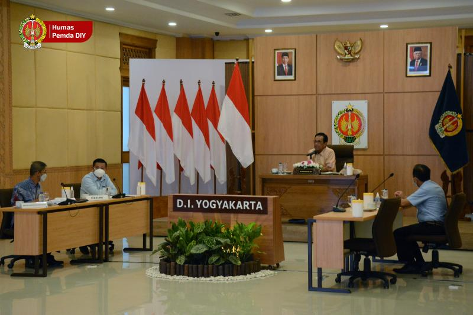

Pemda Utang ke Pusat

Tempat Wisata Viral di Bandung


PROSES pembelajaran di era pandemi memaksa tenaga pendidik, peserta didik, dan orang tua untuk beralih menggunakan teknologi. Saat ini, dalam pemulihan pembelajaran pascapandemi, Kementerian Pendidikan, Kebudayaan, Riset, dan Teknologi (Kemendikbud-Ristek) telah menggunakan teknologi sebagai upaya memulihkan pendidikan lebih cepat dan bangkit lebih kuat, bahkan diharapkan dapat membuat lompatan kemajuan. “Terobosan teknologi telah kita lakukan di berbagai bidang mulai dari jenjang Pendidikan Anak Usia Dini (PAUD), pendidikan tinggi, hingga vokasi. Kita bergerak bagaimana teknologi bisa menjadi solusi untuk akses kualitas, pemerataan, dan lompatan kemajuan pendidikan di seluruh Indonesia,” ujar Direktur Jenderal Guru dan Tenaga Kependidikan, Iwan Syahril dalam dalam keterangannya, Sabtu (13/8). Sebelumnya, perubahan teknologi dalam pembelajaran sulit diterima. Akan tetapi, menurut Iwan, dengan ketangguhan tenaga pendidik Indonesia yang bergerak melibatkan hati untuk berpartisipasi maka penggunaan teknologi dapat diterima.

Pemda Utang ke Pusat |
Tempat Wisata Viral di Bandung |
Survey Minat Pariwisata |
Perkembangan Teknologi Informasi |